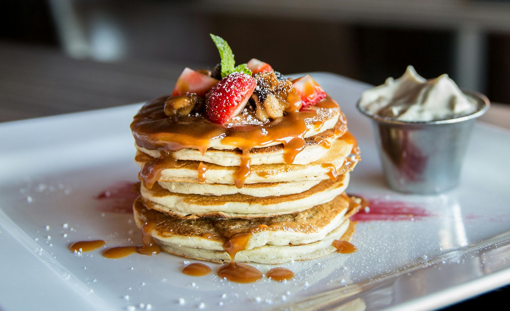

Do you need a healthy lunch idea for busy days?
Looking for a healthy lunch idea that’s quick, nutritious, and easy to prepare? When your schedule is packed and you barely have time to sit down, preparing a healthy lunch can feel like a challenge. Whether you’re juggling work, family, or other commitments, it’s easy to fall into the trap of grabbing something quick but not-so-nutritious.
That’s why I’ve put together five delicious, wholesome lunch ideas that are not only quick to prepare but also satisfying and energizing. These recipes will help you stay on track with your nutrition goals, even on your busiest days!